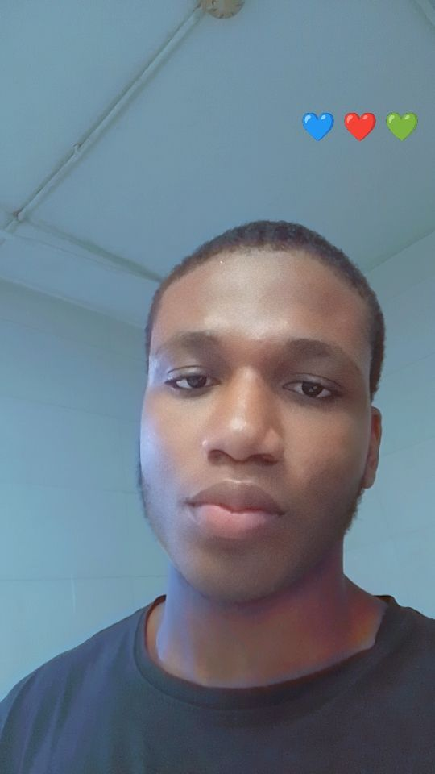

FRANS OLAMILEKAN

Summary
A Junior Web Developer with the aim of advancing my skills, while striving to be the best.
Education
- Bachelor of Science, Public Administration - National Open University of Nigeria (2022-2026)
Work Experience
- Computer Typist
January 2022 - July 2022
- Assisting with the day-day activities of the office.
- Typing out documents, editing and printing them.
- Using Microsoft word and Excel to satisfy our clients request.
Skills
- Typing Skill
- Front-end Programming
- Microsoft Word
Awards and Certifications
- Introduction to HTML
- Introduction to CSS
Other